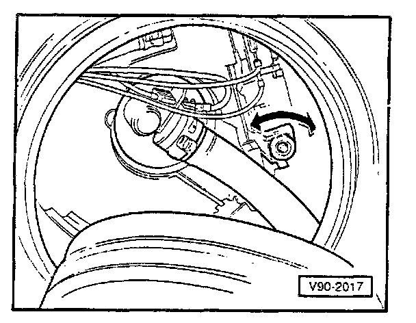
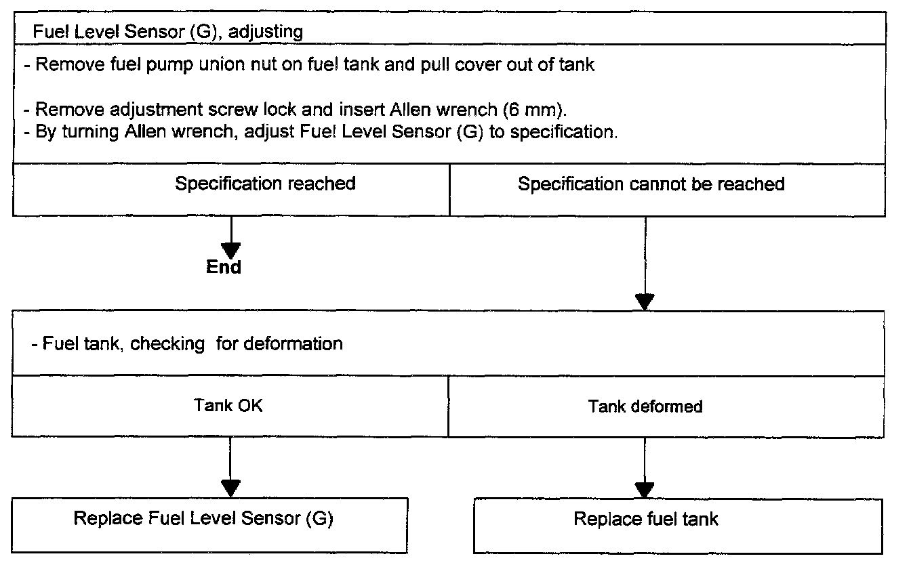

Fuel Level Sensor (G) With Adjusting Screw


Test conditions:
- Position of fuel level sensor OK.
- Switch off ignition
- Disconnect connector from fuel level sensor (G).
- Adjust multimeter Fluke 83 (US 1119) to Ohm range and connect to fuel level sensor contacts.
- Drain fuel tank completely, using fuel storage cart Tempo Products FM 3000 or equivalent. Observe Warning on front page.
- Fill fuel tank with 7 liters (7.4 quarts) of fuel and check sensor resistance.
- must be 189 ohms ± 4 Ohms